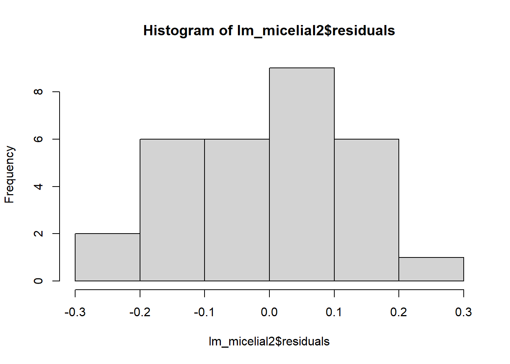
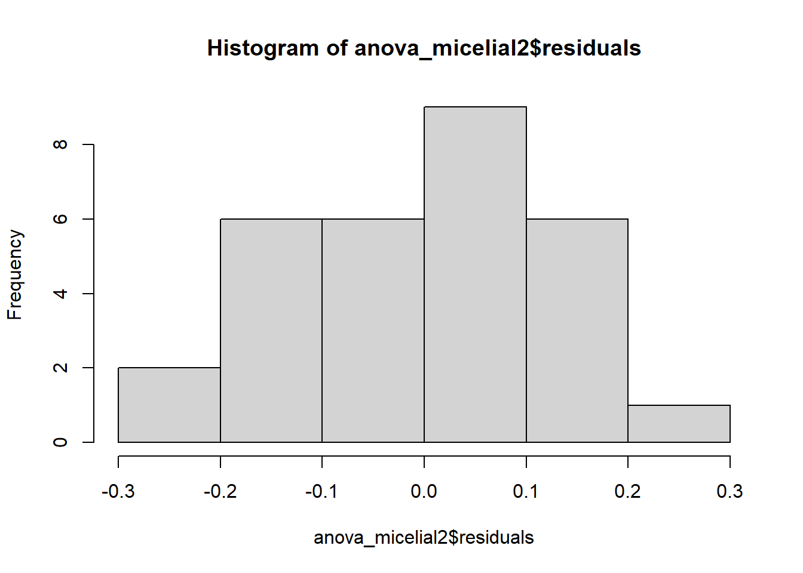

anova_micelial <-aov(tcm ~ especie, data = micelial)anova_micelial
Call:
aov(formula = tcm ~ especie, data = micelial)
Terms:
especie Residuals
Sum of Squares 1.4695800 0.4679167
Deg. of Freedom 4 25
Residual standard error: 0.1368089
Estimated effects may be unbalanced
summary(anova_micelial)
Df Sum Sq Mean Sq F value Pr(>F)
especie 4 1.4696 0.3674 19.63 2.03e-07 ***
Residuals 25 0.4679 0.0187
---
Signif. codes: 0 '***' 0.001 '**' 0.01 '*' 0.05 '.' 0.1 ' ' 1
anova(anova_micelial)
Analysis of Variance Table
Response: tcm
Df Sum Sq Mean Sq F value Pr(>F)
especie 4 1.46958 0.36739 19.629 2.028e-07 ***
Residuals 25 0.46792 0.01872
---
Signif. codes: 0 '***' 0.001 '**' 0.01 '*' 0.05 '.' 0.1 ' ' 1
anova_micelial2 <-lm(tcm ~ especie, data = micelial)anova_micelial2
aov_micelial2 <-aov(tcm ~ especie, data = micelial2)aov_micelial2
Call:
aov(formula = tcm ~ especie, data = micelial2)
Terms:
especie Residuals
Sum of Squares 1.4695800 0.4679167
Deg. of Freedom 4 25
Residual standard error: 0.1368089
Estimated effects may be unbalanced
summary(aov_micelial2)
Df Sum Sq Mean Sq F value Pr(>F)
especie 4 1.4696 0.3674 19.63 2.03e-07 ***
Residuals 25 0.4679 0.0187
---
Signif. codes: 0 '***' 0.001 '**' 0.01 '*' 0.05 '.' 0.1 ' ' 1
anova(aov_micelial2)
Analysis of Variance Table
Response: tcm
Df Sum Sq Mean Sq F value Pr(>F)
especie 4 1.46958 0.36739 19.629 2.028e-07 ***
Residuals 25 0.46792 0.01872
---
Signif. codes: 0 '***' 0.001 '**' 0.01 '*' 0.05 '.' 0.1 ' ' 1
lm_micelial2 <-lm(tcm ~ especie, data = micelial2)lm_micelial2
Call:
lm(formula = tcm ~ especie, data = micelial2)
Residuals:
Min 1Q Median 3Q Max
-0.23667 -0.09667 0.01583 0.08833 0.28333
Coefficients:
Estimate Std. Error t value Pr(>|t|)
(Intercept) 1.57167 0.05585 28.140 < 2e-16 ***
especieFaus -0.33500 0.07899 -4.241 0.000266 ***
especieFcor -0.25000 0.07899 -3.165 0.004047 **
especieFgra -0.66000 0.07899 -8.356 1.05e-08 ***
especieFmer -0.14500 0.07899 -1.836 0.078317 .
---
Signif. codes: 0 '***' 0.001 '**' 0.01 '*' 0.05 '.' 0.1 ' ' 1
Residual standard error: 0.1368 on 25 degrees of freedom
Multiple R-squared: 0.7585, Adjusted R-squared: 0.7199
F-statistic: 19.63 on 4 and 25 DF, p-value: 2.028e-07
anova(lm_micelial2)
Analysis of Variance Table
Response: tcm
Df Sum Sq Mean Sq F value Pr(>F)
especie 4 1.46958 0.36739 19.629 2.028e-07 ***
Residuals 25 0.46792 0.01872
---
Signif. codes: 0 '***' 0.001 '**' 0.01 '*' 0.05 '.' 0.1 ' ' 1
Testes de comparações múltiplas
#Demonstrando os agrupamentos de médiasinstall.packages("emmeans", repos ="https://cran.r-project.org")
Installing package into 'C:/Users/david/AppData/Local/R/win-library/4.3'
(as 'lib' is unspecified)
package 'emmeans' successfully unpacked and MD5 sums checked
The downloaded binary packages are in
C:\Users\david\AppData\Local\Temp\RtmpaI6fsL\downloaded_packages
Installing package into 'C:/Users/david/AppData/Local/R/win-library/4.3'
(as 'lib' is unspecified)
package 'multcomp' successfully unpacked and MD5 sums checked
The downloaded binary packages are in
C:\Users\david\AppData\Local\Temp\RtmpaI6fsL\downloaded_packages
Installing package into 'C:/Users/david/AppData/Local/R/win-library/4.3'
(as 'lib' is unspecified)
Warning: package 'multicompView' is not available for this version of R
A version of this package for your version of R might be available elsewhere,
see the ideas at
https://cran.r-project.org/doc/manuals/r-patched/R-admin.html#Installing-packages
library(emmeans)
Welcome to emmeans.
Caution: You lose important information if you filter this package's results.
See '? untidy'
library(multcomp)
Carregando pacotes exigidos: mvtnorm
Carregando pacotes exigidos: survival
Carregando pacotes exigidos: TH.data
Carregando pacotes exigidos: MASS
Attaching package: 'MASS'
The following object is masked from 'package:dplyr':
select
Attaching package: 'TH.data'
The following object is masked from 'package:MASS':
geyser
especie emmean SE df lower.CL upper.CL .group
Fgra 0.912 0.0559 25 0.797 1.03 1
Faus 1.237 0.0559 25 1.122 1.35 2
Fcor 1.322 0.0559 25 1.207 1.44 2
Fmer 1.427 0.0559 25 1.312 1.54 23
Fasi 1.572 0.0559 25 1.457 1.69 3
Confidence level used: 0.95
P value adjustment: tukey method for comparing a family of 5 estimates
significance level used: alpha = 0.05
NOTE: If two or more means share the same grouping symbol,
then we cannot show them to be different.
But we also did not show them to be the same.
#Pressuposições para o novo conjunto de dadoshist(lm_micelial2$residuals)

shapiro.test(lm_micelial2$residuals)
Shapiro-Wilk normality test
data: lm_micelial2$residuals
W = 0.9821, p-value = 0.8782
bartlett.test(tcm ~ especie, data = micelial2) # H0 é que a variâncias são homogêneas
Bartlett test of homogeneity of variances
data: tcm by especie
Bartlett's K-squared = 4.4367, df = 4, p-value = 0.3501
#Usando o pacote 'DHARMa'install.packages("DHARMA", repos ="https://cran.r-project.org")
Installing package into 'C:/Users/david/AppData/Local/R/win-library/4.3'
(as 'lib' is unspecified)
Warning: package 'DHARMA' is not available for this version of R
A version of this package for your version of R might be available elsewhere,
see the ideas at
https://cran.r-project.org/doc/manuals/r-patched/R-admin.html#Installing-packages
Warning: Perhaps you meant 'DHARMa' ?
library(DHARMa)
This is DHARMa 0.4.6. For overview type '?DHARMa'. For recent changes, type news(package = 'DHARMa')
m2 <-lm (count2 ~ spray, data = Inseticida)anova(m2)
Analysis of Variance Table
Response: count2
Df Sum Sq Mean Sq F value Pr(>F)
spray 5 88.438 17.6876 44.799 < 2.2e-16 ***
Residuals 66 26.058 0.3948
---
Signif. codes: 0 '***' 0.001 '**' 0.01 '*' 0.05 '.' 0.1 ' ' 1
summary(m2)
Call:
lm(formula = count2 ~ spray, data = Inseticida)
Residuals:
Min 1Q Median 3Q Max
-1.24486 -0.39970 -0.01902 0.42661 1.40089
Coefficients:
Estimate Std. Error t value Pr(>|t|)
(Intercept) 3.7607 0.1814 20.733 < 2e-16 ***
sprayB 0.1160 0.2565 0.452 0.653
sprayC -2.5158 0.2565 -9.807 1.64e-14 ***
sprayD -1.5963 0.2565 -6.223 3.80e-08 ***
sprayE -1.9512 0.2565 -7.606 1.34e-10 ***
sprayF 0.2579 0.2565 1.006 0.318
---
Signif. codes: 0 '***' 0.001 '**' 0.01 '*' 0.05 '.' 0.1 ' ' 1
Residual standard error: 0.6283 on 66 degrees of freedom
Multiple R-squared: 0.7724, Adjusted R-squared: 0.7552
F-statistic: 44.8 on 5 and 66 DF, p-value: < 2.2e-16
hist(m2$residuals)
shapiro.test(m2$residuals)
Shapiro-Wilk normality test
data: m2$residuals
W = 0.98721, p-value = 0.6814
qqnorm(m2$residuals)qqline(m2$residuals)
bartlett.test(count2 ~ spray,data = Inseticida)
Bartlett test of homogeneity of variances
data: count2 by spray
Bartlett's K-squared = 3.7525, df = 5, p-value = 0.5856
library(performance)check_normality(m2)
OK: residuals appear as normally distributed (p = 0.681).
check_heteroscedasticity(m2)
OK: Error variance appears to be homoscedastic (p = 0.854).
plot(simulateResiduals(m2))
Agrupamento
medias1 <-emmeans(m1, ~ spray)cld(medias1)
spray emmean SE df lower.CL upper.CL .group
C 2.08 1.13 66 -0.177 4.34 1
E 3.50 1.13 66 1.240 5.76 1
D 4.92 1.13 66 2.656 7.18 1
A 14.50 1.13 66 12.240 16.76 2
B 15.33 1.13 66 13.073 17.59 2
F 16.67 1.13 66 14.406 18.93 2
Confidence level used: 0.95
P value adjustment: tukey method for comparing a family of 6 estimates
significance level used: alpha = 0.05
NOTE: If two or more means share the same grouping symbol,
then we cannot show them to be different.
But we also did not show them to be the same.
spray emmean SE df lower.CL upper.CL .group
C 2.08 1.13 66 -0.177 4.34 1
E 3.50 1.13 66 1.240 5.76 1
D 4.92 1.13 66 2.656 7.18 1
A 14.50 1.13 66 12.240 16.76 2
B 15.33 1.13 66 13.073 17.59 2
F 16.67 1.13 66 14.406 18.93 2
Confidence level used: 0.95
P value adjustment: tukey method for comparing a family of 6 estimates
significance level used: alpha = 0.01
NOTE: If two or more means share the same grouping symbol,
then we cannot show them to be different.
But we also did not show them to be the same.
spray emmean SE df lower.CL upper.CL .group
C 1.24 0.181 66 0.883 1.61 a
E 1.81 0.181 66 1.447 2.17 ab
D 2.16 0.181 66 1.802 2.53 b
A 3.76 0.181 66 3.399 4.12 c
B 3.88 0.181 66 3.514 4.24 c
F 4.02 0.181 66 3.656 4.38 c
Confidence level used: 0.95
P value adjustment: tukey method for comparing a family of 6 estimates
significance level used: alpha = 0.05
NOTE: If two or more means share the same grouping symbol,
then we cannot show them to be different.
But we also did not show them to be the same.
Alternativa 2 - não paramétrico
library(agricolae)kruskal.test(count ~ spray, data = Inseticida)
Kruskal-Wallis rank sum test
data: count by spray
Kruskal-Wallis chi-squared = 54.691, df = 5, p-value = 1.511e-10
Call:
glm(formula = count ~ spray, family = poisson, data = Inseticida)
Coefficients:
Estimate Std. Error z value Pr(>|z|)
(Intercept) 2.67415 0.07581 35.274 < 2e-16 ***
sprayB 0.05588 0.10574 0.528 0.597
sprayC -1.94018 0.21389 -9.071 < 2e-16 ***
sprayD -1.08152 0.15065 -7.179 7.03e-13 ***
sprayE -1.42139 0.17192 -8.268 < 2e-16 ***
sprayF 0.13926 0.10367 1.343 0.179
---
Signif. codes: 0 '***' 0.001 '**' 0.01 '*' 0.05 '.' 0.1 ' ' 1
(Dispersion parameter for poisson family taken to be 1)
Null deviance: 409.041 on 71 degrees of freedom
Residual deviance: 98.329 on 66 degrees of freedom
AIC: 376.59
Number of Fisher Scoring iterations: 5
anova(m4)
Analysis of Deviance Table
Model: poisson, link: log
Response: count
Terms added sequentially (first to last)
Df Deviance Resid. Df Resid. Dev
NULL 71 409.04
spray 5 310.71 66 98.33
plot(simulateResiduals(m4))

medias4 <-emmeans(m4, ~ spray, type ="response")medias4
spray rate SE df asymp.LCL asymp.UCL
A 14.50 1.099 Inf 12.50 16.82
B 15.33 1.130 Inf 13.27 17.72
C 2.08 0.417 Inf 1.41 3.08
D 4.92 0.640 Inf 3.81 6.35
E 3.50 0.540 Inf 2.59 4.74
F 16.67 1.179 Inf 14.51 19.14
Confidence level used: 0.95
Intervals are back-transformed from the log scale
cld(medias4)
spray rate SE df asymp.LCL asymp.UCL .group
C 2.08 0.417 Inf 1.41 3.08 1
E 3.50 0.540 Inf 2.59 4.74 12
D 4.92 0.640 Inf 3.81 6.35 2
A 14.50 1.099 Inf 12.50 16.82 3
B 15.33 1.130 Inf 13.27 17.72 3
F 16.67 1.179 Inf 14.51 19.14 3
Confidence level used: 0.95
Intervals are back-transformed from the log scale
P value adjustment: tukey method for comparing a family of 6 estimates
Tests are performed on the log scale
significance level used: alpha = 0.05
NOTE: If two or more means share the same grouping symbol,
then we cannot show them to be different.
But we also did not show them to be the same.